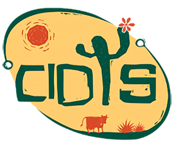
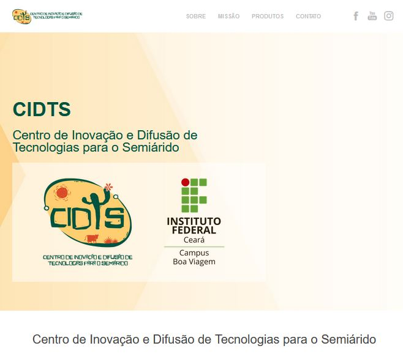
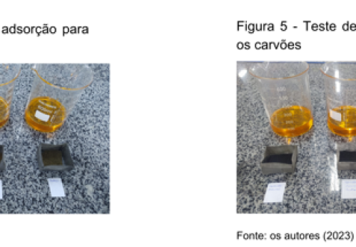
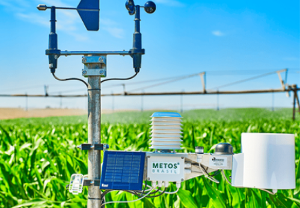
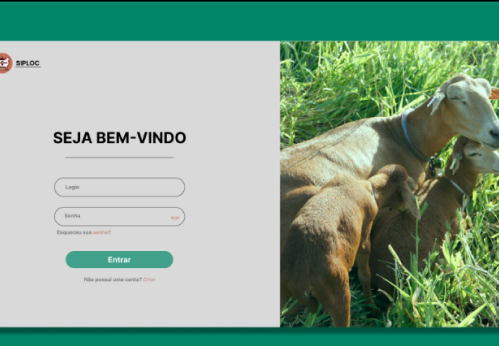
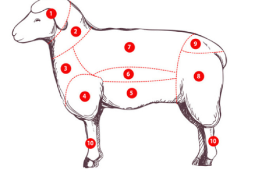
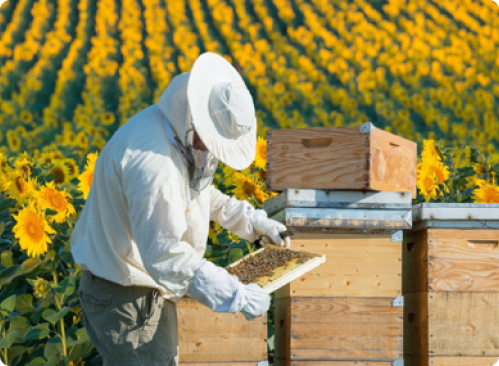
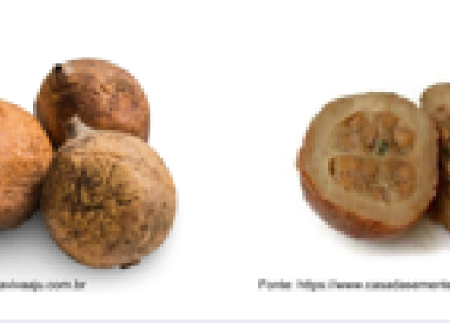

Inovação
e
Difusão
de
Tecnologias
O Centro de Inovação e Difusão de Tecnologias para o Semiárido –
CIDTS é fruto de uma parceria entre o IFCE e o Ministério da Integração e do Desenvolvimento
Regional (MIDR), por meio do programa Rotas da Integração Nacional. Nós atendemos aos diversos
eixos estratégicos pertencentes às rotas do leite, mel, cordeiro e fruticultura através da
extensão tecnológica, capacitação técnica e reciclagem, suporte aos produtores e geração de um
espaço dinâmico de negócios e startups.

Contribuições do projeto CIDTS
para a comunidade do Semiárido Brasileiro
para a comunidade do Semiárido Brasileiro

Plataformacidts.com

Produção de carvão
a partir de plantas
oriundas da Caatinga
e seu uso na
adsorção
a partir de plantas
oriundas da Caatinga
e seu uso na
adsorção

Projeto BEEWEB:
Desenvolvimento de
uma plataforma para
monitoramento de
dados de produção
apícola
Desenvolvimento de
uma plataforma para
monitoramento de
dados de produção
apícola

Estação Metereológica

Leite do Futuro:
Genotipagem de vacas
Genotipagem de vacas

SIPLOC

Rastreabilidade de informações da
carne de cordeiro
em Tauá - CE
carne de cordeiro
em Tauá - CE

Classificação de
predadores de abelhas
melíferas utilizando
redes neurais
predadores de abelhas
melíferas utilizando
redes neurais

Produtos naturais
e sua aplicabilidade
medicinal comparativa
aos sintéticos
e sua aplicabilidade
medicinal comparativa
aos sintéticos
VÍDEO: Educação Transformadora
Estamos aqui para abrir portas que transformam vidas.
Se pudéssemos, compartilharíamos uma infinidade de histórias que validam essa missão.
No entanto, optamos por narrar algumas que encapsulam e simbolizam o espírito de todas elas.
Dê uma conferida neste vídeo!
Inspiramos inovação e prosperidade! Nossa plataforma pioneira une centros de inovação e capacitação, impulsionando tecnologias para transformar as cadeias produtivas de leite, mel, frutas e cordeiro. Juntos, criamos, aprendemos e prosperamos